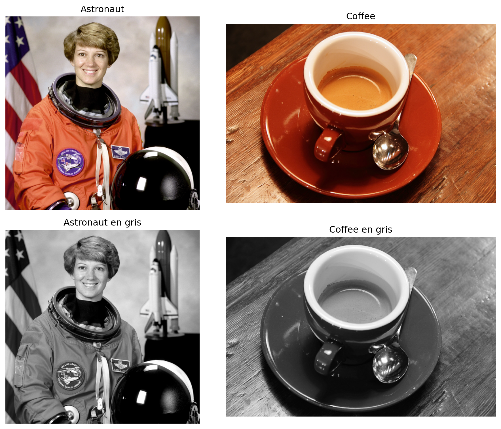
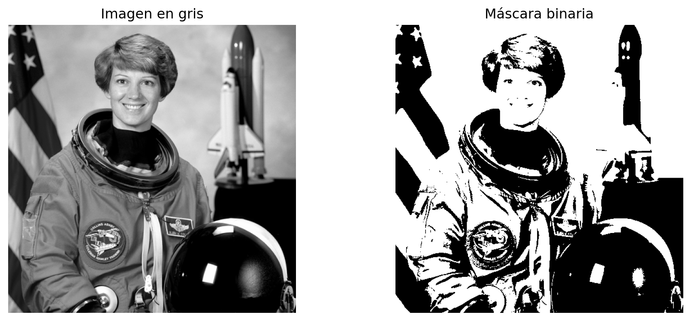

Esta clase introduce tres familias de descriptores clásicos de imagen que siguen siendo útiles para tareas de clasificación, recuperación y análisis exploratorio:
La idea central es que una imagen puede describirse mediante un vector numérico de características. En esta primera clase se estudia qué mide cada descriptor, cómo se calcula y cómo implementarlo en Python.
Al finalizar la sesión, el estudiante será capaz de:
La idea de describir textura mediante dependencias espaciales entre niveles de gris se formalizó en el trabajo clásico de Haralick, Shanmugam y Dinstein (1973). En ese artículo se plantean características texturales calculadas a partir de la frecuencia con la que pares de intensidades aparecen con un desplazamiento espacial dado. Ese artículo es la referencia histórica central para GLCM.
Los siete momentos invariantes de Hu provienen del artículo de Ming-Kuei Hu (1962). Su aporte fue construir combinaciones de momentos centralizados y normalizados que son invariantes a traslación, escala y rotación; el séptimo además cambia de signo ante reflexión.
El uso de los primeros momentos estadísticos del color como descriptor global se consolidó en la literatura de recuperación de imágenes por contenido durante la década de 1990. Una referencia muy citada es Stricker y Orengo (1995), quienes emplean momentos de color como resumen compacto de la distribución cromática. En la práctica, suele usarse por canal el trío:
Supongamos que tenemos una imagen y queremos clasificarla. En lugar de alimentar directamente todos sus pixeles a un algoritmo, podemos construir un vector como:
\[ \mathbf{x} = [\text{GLCM}_1, \ldots, \text{GLCM}_p, \text{Hu}_1, \ldots, \text{Hu}_7, \text{Color}_1, \ldots, \text{Color}_q] \]
Cada bloque resume un aspecto diferente:
Usaremos imágenes de ejemplo incluidas en scikit-image para ilustrar los cálculos.
img_color_1 = data.astronaut()
img_color_2 = data.coffee()
img_gray_1 = img_as_ubyte(color.rgb2gray(img_color_1))
img_gray_2 = img_as_ubyte(color.rgb2gray(img_color_2))
fig, ax = plt.subplots(2, 2, figsize=(10, 8))
ax[0, 0].imshow(img_color_1)
ax[0, 0].set_title("Astronaut")
ax[0, 0].axis("off")
ax[0, 1].imshow(img_color_2)
ax[0, 1].set_title("Coffee")
ax[0, 1].axis("off")
ax[1, 0].imshow(img_gray_1, cmap="gray")
ax[1, 0].set_title("Astronaut en gris")
ax[1, 0].axis("off")
ax[1, 1].imshow(img_gray_2, cmap="gray")
ax[1, 1].set_title("Coffee en gris")
ax[1, 1].axis("off")
plt.tight_layout()
plt.show()
La GLCM cuenta cuántas veces aparece un par de intensidades \((i, j)\) separado por una distancia y una dirección dadas. Si una textura tiene patrones repetitivos, su matriz de co-ocurrencia tendrá una estructura característica.
Formalmente, para una imagen cuantizada en \(L\) niveles, la entrada \((i,j)\) de la GLCM representa la frecuencia con la que un pixel con valor \(i\) aparece junto a otro con valor \(j\) según un desplazamiento especificado.
Antes de calcular GLCM conviene decidir:
levels);Reducir el número de niveles suele ser útil para estabilizar el cálculo y reducir costo computacional.
graycomatrix(32, 32, 2, 4)La salida tiene dimensiones:
\[ (\text{levels}, \text{levels}, \#\text{distancias}, \#\text{ángulos}) \]
scikit-image implementa varias propiedades derivadas de la GLCM. Entre las más utilizadas están:
contrastdissimilarityhomogeneityASMenergycorrelation{'contrast': np.float64(9.26983641788257),
'dissimilarity': np.float64(1.3507421136631752),
'homogeneity': np.float64(0.6705625818198401),
'ASM': np.float64(0.028447296405896605),
'energy': np.float64(0.16849119255130862),
'correlation': np.float64(0.9468835125475412)}def extract_glcm_features(
image_gray,
levels=32,
distances=(1, 3, 5),
angles=(0, np.pi/4, np.pi/2, 3*np.pi/4)
):
img_q = (image_gray / 256 * levels).astype(np.uint8)
img_q = np.clip(img_q, 0, levels - 1)
glcm = graycomatrix(
img_q,
distances=list(distances),
angles=list(angles),
levels=levels,
symmetric=True,
normed=True
)
props = ["contrast", "dissimilarity", "homogeneity", "ASM", "energy", "correlation"]
feats = []
names = []
for prop in props:
vals = graycoprops(glcm, prop)
for i, d in enumerate(distances):
for j, a in enumerate(angles):
feats.append(vals[i, j])
names.append(f"glcm_{prop}_d{d}_a{j}")
return np.array(feats, dtype=float), namesLos momentos de una imagen binaria o de una región describen cómo se distribuye su masa en el plano. A partir de los momentos espaciales, centrales y normalizados se construyen los siete invariantes de Hu.
En OpenCV, el flujo típico es:
cv2.moments;cv2.HuMoments.Para ilustrar la idea, segmentaremos aproximadamente el objeto principal mediante umbralización en escala de grises.
_, mask = cv2.threshold(img_gray_1, 110, 255, cv2.THRESH_BINARY)
fig, ax = plt.subplots(1, 2, figsize=(10, 4))
ax[0].imshow(img_gray_1, cmap="gray")
ax[0].set_title("Imagen en gris")
ax[0].axis("off")
ax[1].imshow(mask, cmap="gray")
ax[1].set_title("Máscara binaria")
ax[1].axis("off")
plt.tight_layout()
plt.show()
array([ 1.08675575e-03, 6.86753193e-08, 9.57743180e-11, 1.70608565e-11,
3.86304811e-22, -6.43978504e-16, 5.71296096e-22])Los valores pueden variar en magnitud de manera extrema. Por ello es muy común usar una transformación logarítmica con signo:
\[ h'_k = -\operatorname{sign}(h_k) \log_{10}(|h_k| + \varepsilon) \]
def extract_hu_features(image_gray, threshold=110):
_, mask = cv2.threshold(image_gray, threshold, 255, cv2.THRESH_BINARY)
moments = cv2.moments(mask)
hu = cv2.HuMoments(moments).flatten()
hu_log = -np.sign(hu) * np.log10(np.abs(hu) + 1e-12)
names = [f"hu_{i+1}" for i in range(7)]
return hu_log.astype(float), names[('hu_1', np.float64(2.9638680525788126)),
('hu_2', np.float64(7.163192989003374)),
('hu_3', np.float64(10.014239880588148)),
('hu_4', np.float64(10.743261657891907)),
('hu_5', np.float64(11.99999999983223)),
('hu_6', np.float64(-11.999720413703225)),
('hu_7', np.float64(11.99999999975189))]Los momentos de color resumen la distribución de intensidades en cada canal. El esquema más habitual usa, por canal:
Si se trabaja con RGB, se obtienen 9 características:
\[ [\mu_R, \sigma_R, s_R, \mu_G, \sigma_G, s_G, \mu_B, \sigma_B, s_B] \]
def extract_color_moments(image_rgb):
feats = []
names = []
channel_names = ["R", "G", "B"]
for idx, cname in enumerate(channel_names):
channel = image_rgb[:, :, idx].astype(np.float64).ravel()
feats.extend([
channel.mean(),
channel.std(ddof=0),
skew(channel, bias=False)
])
names.extend([
f"color_mean_{cname}",
f"color_std_{cname}",
f"color_skew_{cname}"
])
return np.array(feats, dtype=float), names[('color_mean_R', np.float64(141.5625)),
('color_std_R', np.float64(82.0389)),
('color_skew_R', np.float64(-0.6208)),
('color_mean_G', np.float64(105.7594)),
('color_std_G', np.float64(76.6155)),
('color_skew_G', np.float64(-0.0085)),
('color_mean_B', np.float64(96.4751)),
('color_std_B', np.float64(77.8534)),
('color_skew_B', np.float64(0.2254))]En varias aplicaciones resulta más interpretable usar HSV o Lab en lugar de RGB, sobre todo cuando interesa separar tono, saturación e intensidad.
Ahora comparemos dos imágenes de ejemplo usando los tres tipos de descriptores.
g1, _ = extract_glcm_features(img_gray_1)
g2, _ = extract_glcm_features(img_gray_2)
h1, _ = extract_hu_features(img_gray_1)
h2, _ = extract_hu_features(img_gray_2)
c1, _ = extract_color_moments(img_color_1)
c2, _ = extract_color_moments(img_color_2)
print("Distancia Euclidiana GLCM:", np.linalg.norm(g1 - g2))
print("Distancia Euclidiana Hu:", np.linalg.norm(h1 - h2))
print("Distancia Euclidiana Color:", np.linalg.norm(c1 - c2))Distancia Euclidiana GLCM: 25.55148557353642
Distancia Euclidiana Hu: 23.94679096361307
Distancia Euclidiana Color: 62.80109738866211Estas distancias no deben interpretarse todavía como un clasificador, pero muestran que los descriptores convierten imágenes en vectores comparables numéricamente.
def extract_classic_descriptors(image_rgb):
image_gray = img_as_ubyte(color.rgb2gray(image_rgb))
glcm_vec, glcm_names = extract_glcm_features(image_gray)
hu_vec, hu_names = extract_hu_features(image_gray)
color_vec, color_names = extract_color_moments(image_rgb)
vec = np.concatenate([glcm_vec, hu_vec, color_vec])
names = glcm_names + hu_names + color_names
return vec, namesConviene cuando:
Conviene cuando:
Conviene cuando:
Implementa una función que reciba una lista de imágenes y devuelva una matriz X donde:
Sugerencia:
Los descriptores clásicos no sustituyen a los métodos modernos basados en aprendizaje profundo, pero siguen siendo valiosos por varias razones:
La siguiente clase tomará estos descriptores y construirá un flujo completo de trabajo para:
scikit-image: documentación de graycomatrix y graycoprops.moments y HuMoments.Tomar un conjunto pequeño de imágenes organizadas por clase y preparar tres matrices de características:
Esas matrices se usarán en la siguiente clase para PCA y análisis de separabilidad.